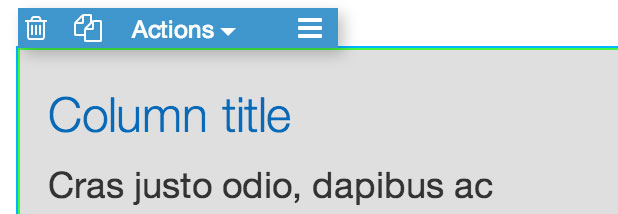
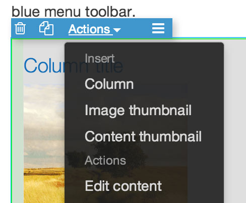

Become Pinegrow expert in 10 minutes and save hours every week
The gray box below is our playground (it's a Bootstrap column element). Click on it to select it. See how it also gets selected in the tree on the right side of the app window. Tree is a very useful tool. Selected element also gets a blue menu toolbar.
Check out the panel on the left side of the app window. It has four tabs: Lib, Prop, Css and Vars.
Go to Lib tab in the left panel, grab a Row and drop it into the gray container box above.
The newly added row got selected. You can also see it in the tree.
Go ahead and drag a Column from Lib to the row in the gray box. Great!
Now add another column by duplicating the one you've just added. Select the column in gray box (use the tree if neccessary). Selected element has a blue menu toolbar on top. Click on the second icon from the left, the one between trashcan and Actions. Keep clicking on it to create as many new colums as you need.
Try trashcan icon as well. It'll delete the selected element.
Let's add image to the column. But this time drag the Image from Lib to the tree on the right side and place it between the Heading and the first paragraph of the column. The easiest way is to first select the column so that you see where in the tree it is located.
Adding element to the tree gives you much better control over their position. Whenever you drop an element to the page it is a good idea to check its position in the tree and correct it if neccessary.
You can also rearrange elements by moving them in the tree. Try it out. Use undo if you mess up.
One more thing to do with our gray box above. Select row in the gray container box (use tree if neccessary) and click on Actions in the menu toolbar of the selected element. Choose insert column to easily add another column to the row. Many elements (lists, jumbotrons, forms, progress bars...) have this option.
Page structure can get quite complex - just look at the tree on the right side. You can simplify it by collapsing elements. Try it: select a column or any other element with children, go to the tree and click on the small arrow icon on the left side of the tree branch for that element.
All children will become hidden in the tree. Selected element will become yellow to indicate that it is collapsed. If you try to select any of its children on the page, you'll simply reselect the parent element. It's much easier to move collapsed elements around in the tree.
When you need to work with its children again, just uncollapse the element - click on the small arrow in the tree branch or choose Collapse / Uncollapse in selected element's Actions menu.
That was fun, right? But that was just the start. Check out the step 2 of the Pinegrow tutorial - Working with element properties.